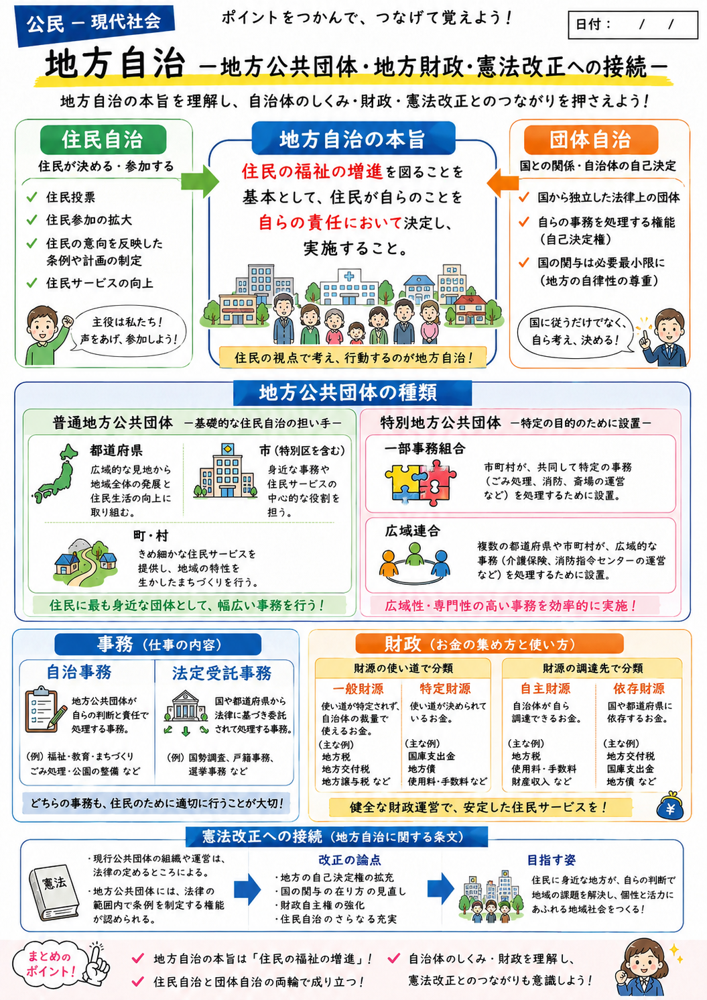
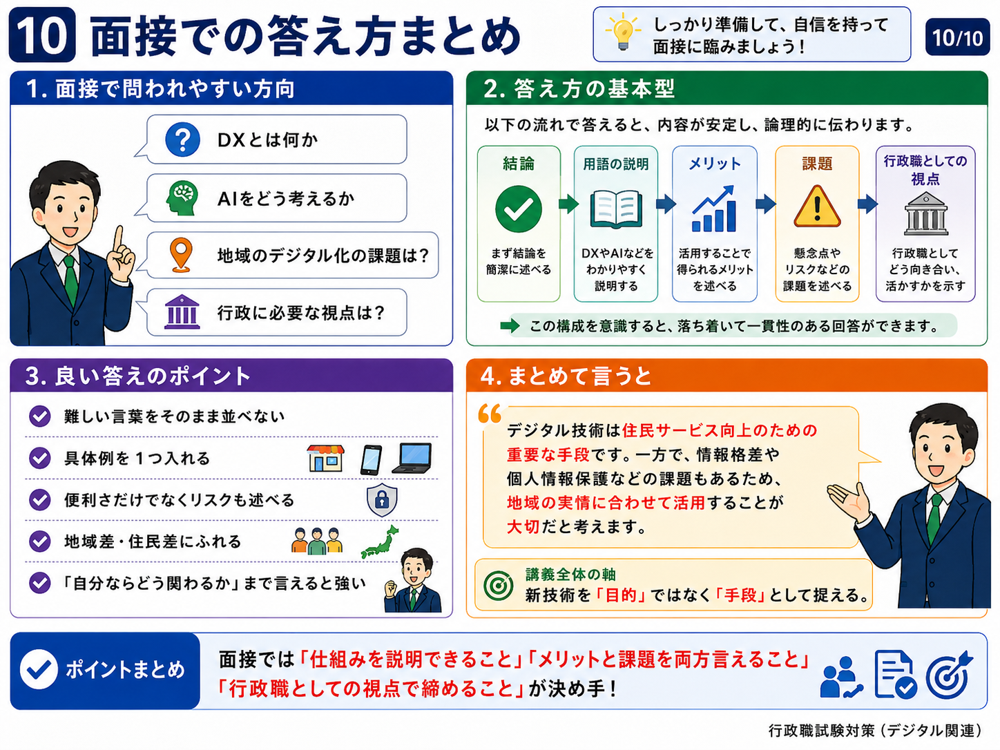
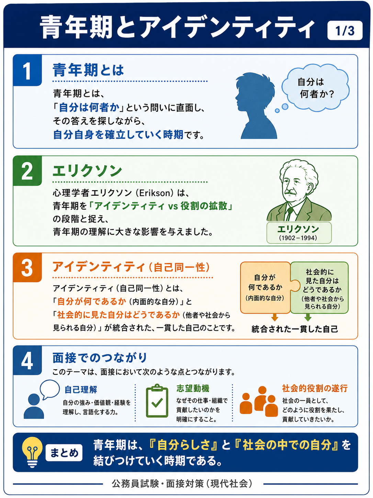
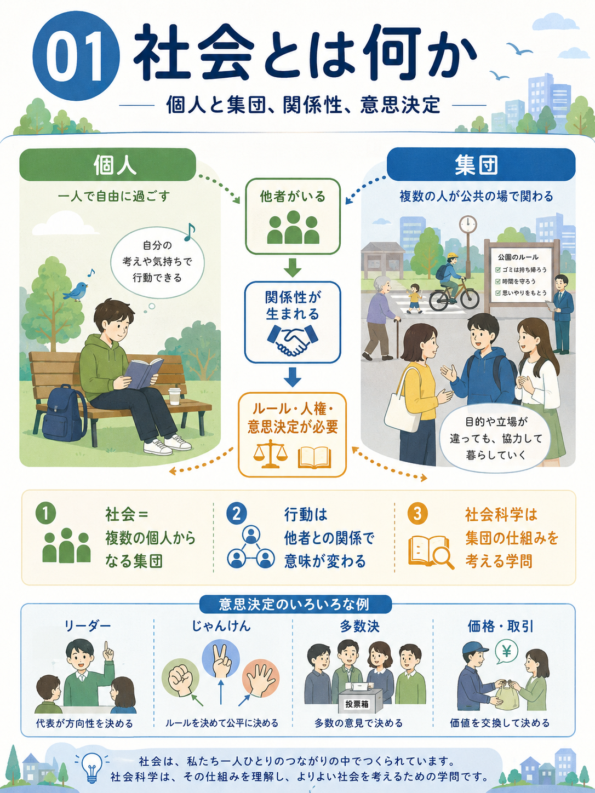
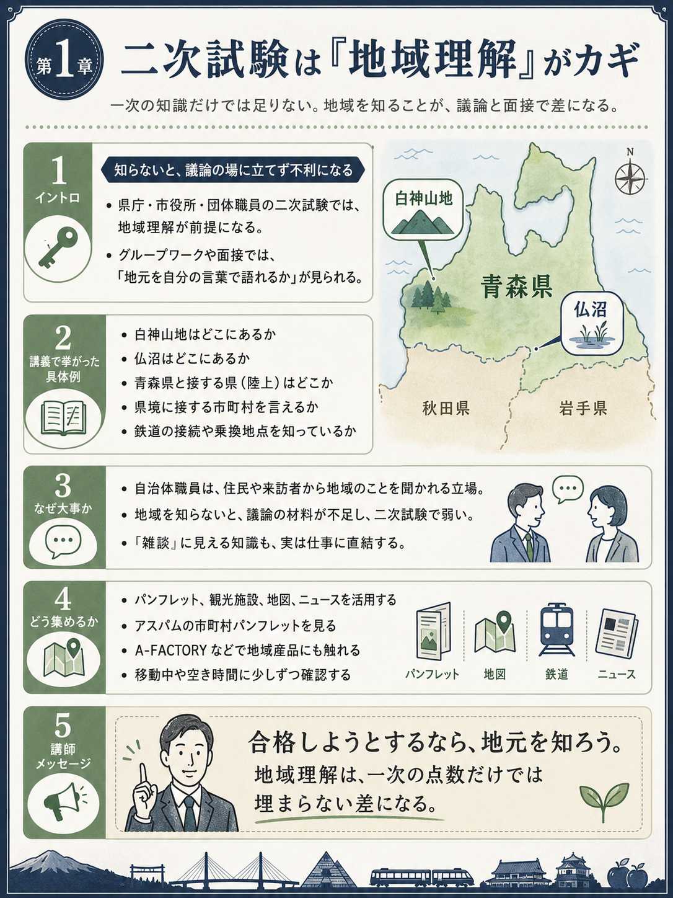

地方自治｜ポイント整理
住民自治、団体自治、地方公共団体の仕事と財政を一枚で整理する導入図解。
1 点
category
政治、行政、地域、経済、国際関係を図解で整理する学習素材。

住民自治、団体自治、地方公共団体の仕事と財政を一枚で整理する導入図解。
1 点

デジタル技術、行政の役割、住民サービスと課題を面接で説明するための整理素材。
10 点
要確認: フォルダ分類は社会科学だが、画像内に面接対策の表現があるため表示説明のみ要確認。

個人と集団、他者との関係、ルールと意思決定から社会の仕組みを考える導入素材。
6 点

個人、集団、関係性、意思決定を手がかりに社会を見渡すための図解素材。
3 点
要確認: 講義2とのテーマ近接があるため、公開時に並び順と説明の重複を確認。

地域理解、国際政治、国連、国際法、地方自治を章ごとに整理する教材画像。
9 点

高度経済成長、戦後景気、国際貿易、為替、経済理論を11枚で確認する要約素材。
11 点